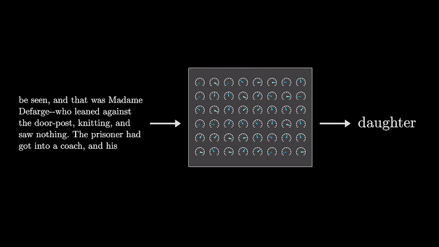
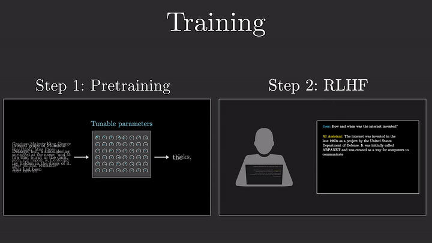
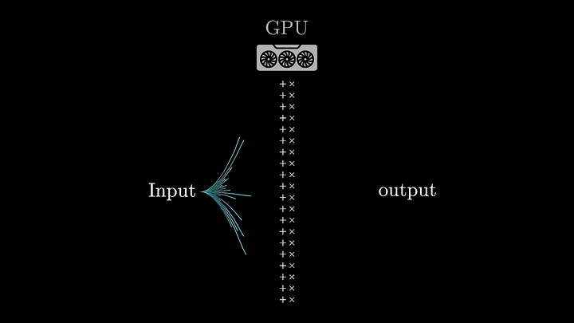
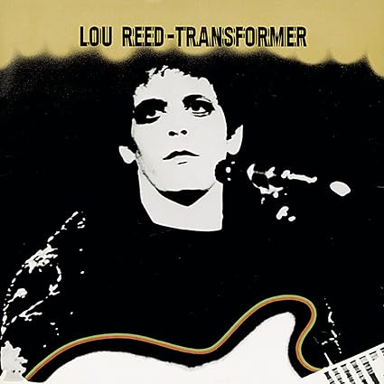
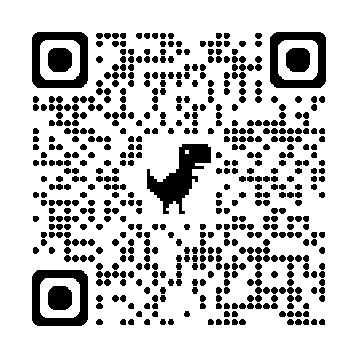
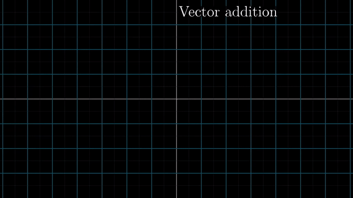
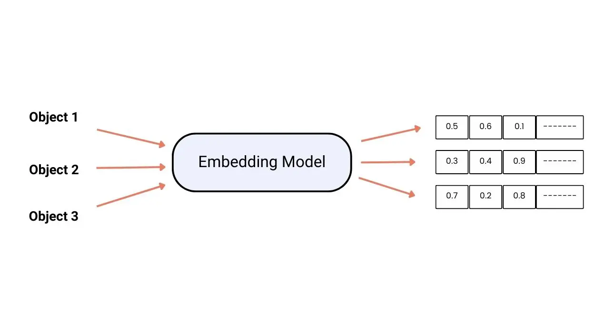
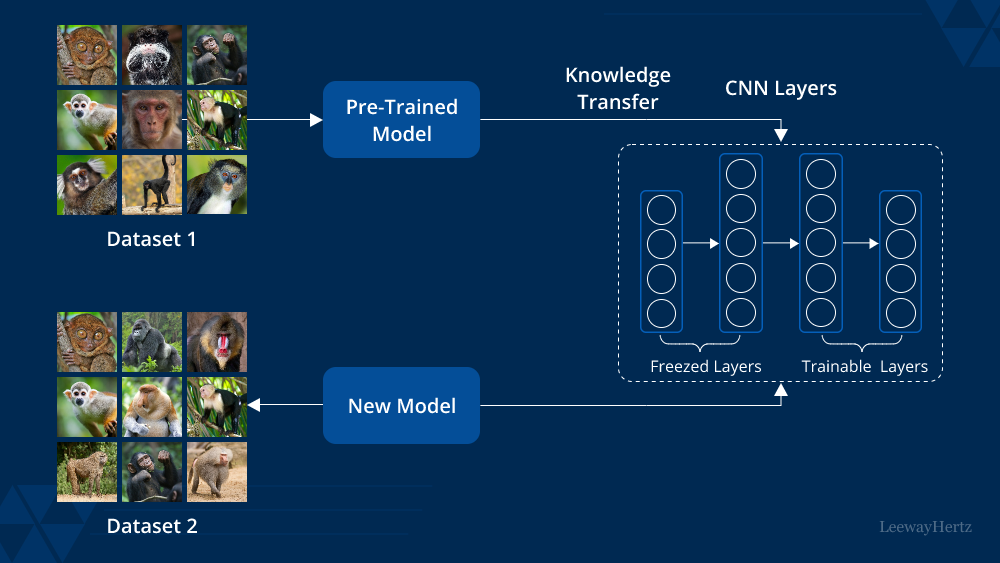
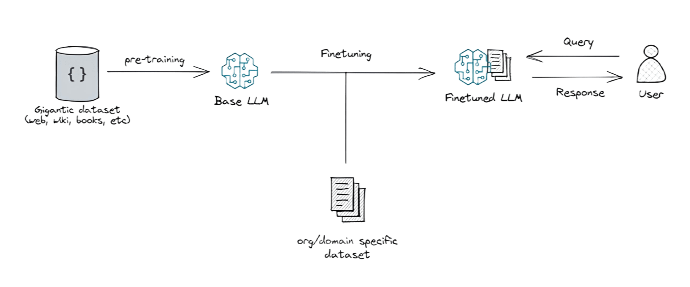
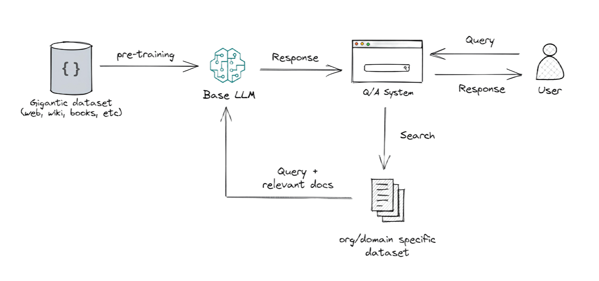

LARGE LANGUAGE MODELS (LLM) APLICADOS AL ENTORNO MÉDICO
Hospital Universitari Arnau de Vilanova (Lleida)
2025-02-10
Índice
- Introducción breve a los LLM
- Embedding Systems
- Fine-Tuning y Retrieval Augmentation Generation (RAG)
- Ejemplo de RAG según la estructuración de los datos
- Knowledge Graphs
- Límites de los LLM
Introducción breve a los LLM
LLM
LLM Pretraining
A una velocidad de 1000 millones de operaciones por segundo entrenar a GPT3 nos costaría 100 millones de años.
Se hubiese tenido que empezar a entrenar el modelo en el cretácico.
LLM Reinforcement Learning with Human Feedback
LLM GPU
TRANSFORMERS
 
Codificaciones posicionales: Los transformers agregan un número a cada palabra para indicar su posición en la oración. Esto ayuda al modelo a comprender el orden de las palabras, lo cual es crucial para el significado.
Atención: Permite al modelo considerar todas las palabras de la oración al traducir o analizar una palabra específica. Esto ayuda a capturar relaciones complejas entre palabras y mejora la precisión de la traducción y la comprensión.
Autoatención: Permite al modelo comprender una palabra en el contexto de las palabras que la rodean, lo que ayuda a desambiguar palabras con múltiples significados y captar matices del lenguaje.
Vector Embedding
EMBEDDING
Vector embeddings son representaciones numéricas de información, como texto, documentos, imágenes o audio. Capturan el significado semántico de la información
VECTORES
EMBEDDING MACHINE
FINE-TUNNING y RETRIEVAS AUGMENTATION GENERATION (RAG)
FINE-TUNNING
El ajuste fino de un LLM es una técnica de aprendizaje por transferencia en la que se toma un modelo pre-entrenado con un gran conjunto de datos para una tarea general, y se realizan pequeños ajustes a sus parámetros internos para optimizar su rendimiento en una nueva tarea específica
TRANSFER LEARNING
FINE-TUNNING (ESQUEMA)
FINE-TUNNING (ESQUEMA)
FINE-TUNING (DEMOSTRACIÓN)
- BioMistral/BioMistral-7B
- mistralai/Mistral-7B-Instruct-v0.1
RAG (2020)
Vectorización del contenido: Cada fragmento de texto se convierte en un vector numérico utilizando un modelo de embeddings. Estos vectores representan el significado semántico del texto en un espacio multidimensional.
Búsqueda de similitud: Cuando se realiza una consulta, esta también se vectoriza, y se busca en la base de datos vectorial los fragmentos cuyos vectores sean más cercanos al de la consulta (similaridad coseno, distancia euclidiana, etc.).
ESQUEMA RAG
FINE-TUNNING VS RAG
| Característica | Fine-tuning | RAG |
|---|---|---|
| Enfoque principal | Adaptación del modelo | Aumento de la información |
| Método | Ajuste de parámetros | Recuperación de información externa |
| Ventajas | Personalización del modelo, eficiencia | Respuestas contextualmente relevantes, precisión |
| Limitaciones | Dificultad con datos cambiantes, adaptación de estilo limitada | Adaptación de estilo limitada, enfoque en recuperación |
FINE-TUNNING VS RAG
KNOWLEDGE GRAPH
Lord os the rings
Prueba